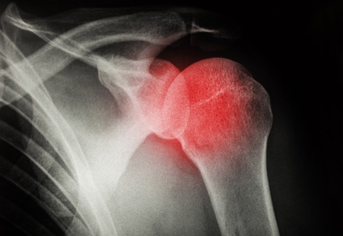

Shoulder surgery can be a daunting experience, but with the right pillow it doesn't have to be! The best wedge pillow after shoulder surgery is something that should not be overlooked. It provides support and comfort while aiding in the healing process. Not all pillows are created equal, so you'll want to do your research on which one will work best for you.
The great thing about wedge pillows is they come in a variety of sizes and shapes, allowing you to customize your level of support during recovery. They can also help reduce swelling and prevent further injury by keeping your arm from moving too much as you sleep or rest. Additionally, the angle helps keep your spine aligned properly while sleeping (as opposed to lying flat on your back).
When choosing a wedge pillow, look for one that's made with quality materials such as memory foam or latex foam. These types offer superior cushioning compared to other materials like polyester or cotton. Furthermore, they provide excellent airflow and temperature regulation - helping keep you cool throughout the night! Also make sure it has an adjustable incline so that you can adjust the angle depending on your needs.
Finally, always consider how easy it is to transport and store the pillow when not in use! Many wedges come with removable covers which makes them easier to toss in a bag if needed. Exclamation marks(!) can also be beneficial as they allow air flow between the layers - keeping everything breathable and comfortable at all times!
In conclusion, finding the best wedge pillow after shoulder surgery isn't difficult if you know what features to look for! Make sure it's made from high-quality materials such as memory foam or latex foam; has an adjustable incline; comes with removable covers; and offers good air flow between layers. With these features in mind, you're sure to find a pillow that will make recovery more comfortable (and even enjoyable) for years to come!
